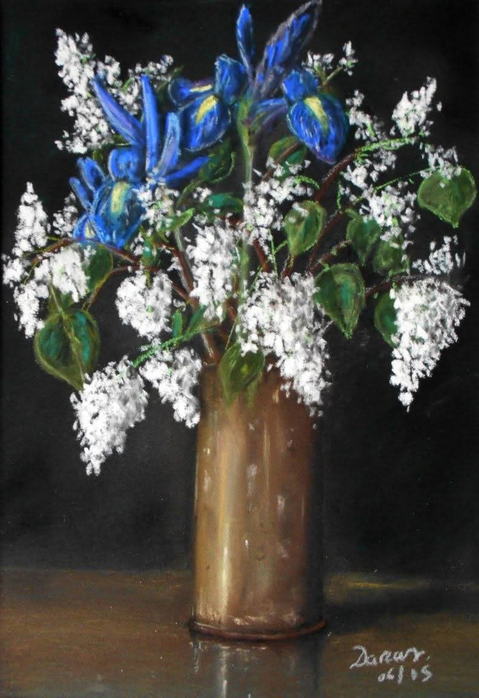

Fleurs
Iris et lilas dans un obus
Un obus transformé en vase accueille des iris et des lilas. Ce contraste s'est imposé comme une évidence : la matière façonnée pour détruire devient le support d'une vie fragile. Un clair-obscur. J'ai simplement laissé la lumière révéler cette rencontre inattendue, tandis que les ombres en préservent le silence.
Demander des informations →← Retour à la galerie